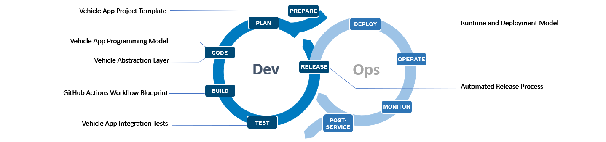

+++
title = "Velocitas"
linkTitle = "Velocitas"
+++

{{< blocks/cover title="Eclipse Velocitas" image_anchor="center" color="dark">}}
<div class="mx-auto">
  <p class="lead mt-5">Toolchain for creating containerized in-vehicle applications</p>
  <a class="btn btn-lg btn-primary mr-3 mb-4" href="docs/concepts/">
     Concepts<i class="fas fa-arrow-alt-circle-right ml-2"></i>
  </a>
  <a class="btn btn-lg btn-secondary mr-3 mb-4" href="docs/tutorials/">
    Tutorials <i class="fas fa-arrow-alt-circle-right ml-2"></i>
  </a>
  <div class="mx-auto mt-5">
    {{<blocks/link-down color="white">}}
  </div>  
</div>
{{< /blocks/cover >}}

{{% blocks/section color="white" %}}

# Eclipse Velocitas

The Eclipse project _Velocitas_ provides an end-to-end, scalable and modular development toolchain to create containerized in-vehicle applications (_Vehicle Apps_) 
that offers a comfortable, fast and efficient development experience to increase the velocity of a development team.


{{% blocks/feature icon="fa-lightbulb" title="Vehicle App Project Template" url="https://github.com/eclipse-velocitas/vehicle-app-python-template" %}}
Quick setup of a _Vehicle App_ project with the help of GitHub templates for the supported programming languages including a sample _Vehicle App_ 
and GitHub Actions workflow, and comfortable setup of the development environment e.g. in Microsoft Visual Studio Code.
{{% /blocks/feature %}}


{{% blocks/feature icon="fa-solid fa-code" title="Vehicle App Programming Model" url="docs/development-model.md" %}}
Simplify coding and debugging of _Vehicle Apps_ that accessing vehicle data points and modifying vehicle functions 
using the provided SDK for the different programming languages that delegates to the _Vehicle Abstraction Layer_.
{{% /blocks/feature %}}


{{% blocks/feature icon="fa-solid fa-layer-group" title="Vehicle Abstraction Layer" url="docs/reference/val/" %}}
Abstracts vehicle make & model specific properties and capabilities to a common representation. 
This makes it possible for _Vehicle Apps_ to be portable across different electric and electronic vehicle architectures 
e.g. the _Vehicle Apps_ do not care whether the seat is controlled via CAN, LIN or some other physical interface.
{{% /blocks/feature %}}

{{% blocks/feature icon="fab fa-github" title="GitHub Actions Workflow Blueprint" url="docs/concepts/vehicle_app_releases/" %}}
Providing ready-to-use GitHub workflows to check the _Vehicle App_, build images for multi architectures, scan it, 
execute integration tests and release the _Vehicle App_ to allow the developer to focus on the development of the _Vehicle App_.
{{% /blocks/feature %}}

{{% blocks/feature icon="fab fa-github" title="Automated Release Process" url="docs/concepts/vehicle_app_releases/" %}}
Providing a release workflow to generate release artifacts and documentation out of the CI workflow results and 
push it to the GitHub container registry to be used by a deployment system.
{{% /blocks/feature %}}

{{% blocks/feature icon="fa-solid fa-box" title="Runtime and Deployment Model" url="docs/concepts/runtime-deployment-model/" %}}
Running and deploying _Vehicle App_ as OCI-compliant container to increase the flexibility to support different programming languages 
and runtimes to accelerate innovation and development.
{{% /blocks/feature %}}

{{% /blocks/section %}}

{{< blocks/lead color="primary">}}
    {{< youtube id=U6iBALbfKcE autoplay="true" >}}
{{< /blocks/lead >}}